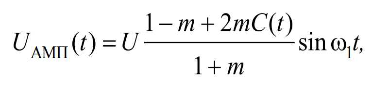

Во многих телемеханических устройствах различного назначения формируются дискретные первичные сигналы в виде некоторой последовательности однополярных или двухполярных прямоугольных имульсов. При амплитудной модуляции этими сигналами гармонического носителя получим сигнал передачи, амплитуда которого имеет только два значения: U и 0. Такой вид модуляции называют амплитудной манипуляцией.
Если модулирующий сигнал меняется во времени от 0 до 1, то амплитудно-манипулированный сигнал запишется так:
Амплитудная манипуляция редко используется на практике, т.к. из всех видов манипуляции наименее помехоустойчива.Так, например небольшая и кратковременная импульсная помеха может повлечь целую последовательность ошибочно принятых символов. Она обычно применяется в сочетании с другими видами манипуляции.